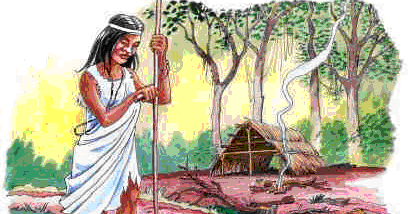

Orígenes de la ronda del mate
En el principio, los custodios y usuarios de las yerba mate fueron los guaraníes. Ellos utilizaban sus hojas como bebida, objeto de culto y moneda de cambio en sus trueques con otros pueblos. Caá en guaraní significa yerba, planta y selva. Para este pueblo, el árbol de la yerba mate era, más que nada, un regalo de los dioses.
¡Primeros referentes del mate!
Pero quienes se encargaron de difundir su consumo y sus virtudes por todo el entonces Virreinato del Río de la Plata fueron los conquistadores. Años más tarde, los Jesuitas introdujeron el cultivo en las reducciones o misiones jesuíticas guaraníes. Gracias a ellos, la yerba mate se popularizó. De esta manera fue que tomar mate se transformó en una de las tradiciones que, como pocas, se mantiene inalterada desde hace siglos, arraigándose y expandiéndose alrededor del mundo. Tanto, que hoy por hoy en Argentina se consumen alrededor de 100 litros de mate al año por persona.
“Frente al mate somos todos iguales”
Frase la dijo Valeria Trapaga en una charla TED, la primera sommelier de mate del país. “Frente al mate somos todos iguales”. Condición fue una de las tantas cosas que la atrajo y la llevó a volverse experta en los secretos de esta bebida ritual de los argentinos. Trapaga, que recorre el país compartiendo sus conocimientos sobre la yerba mate en charlas y reuniones, agrega que “la yerba mate no es hoja molida metida dentro de un paquete, es mucho, mucho más que eso”.